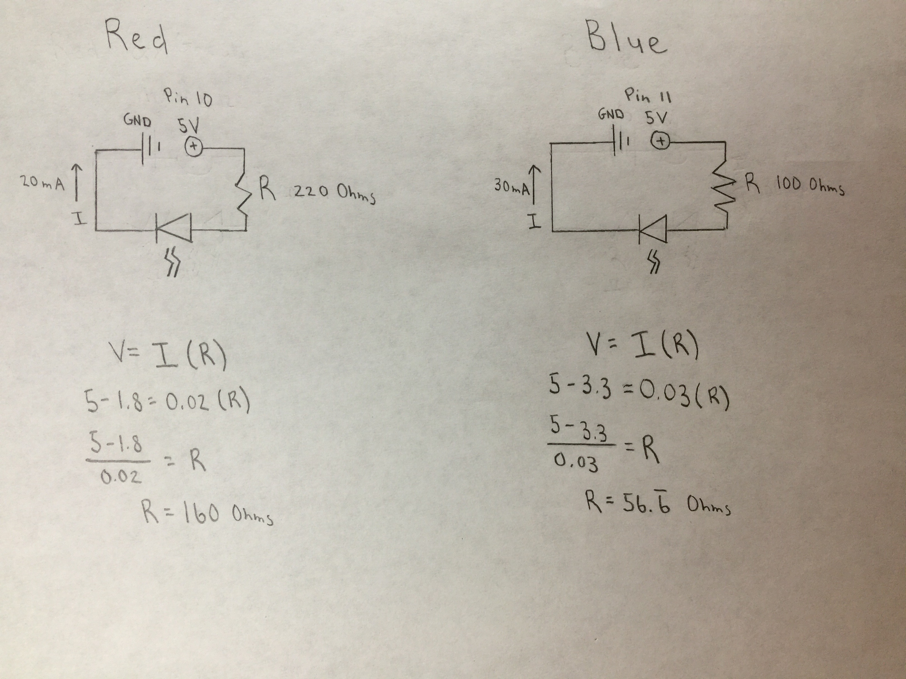
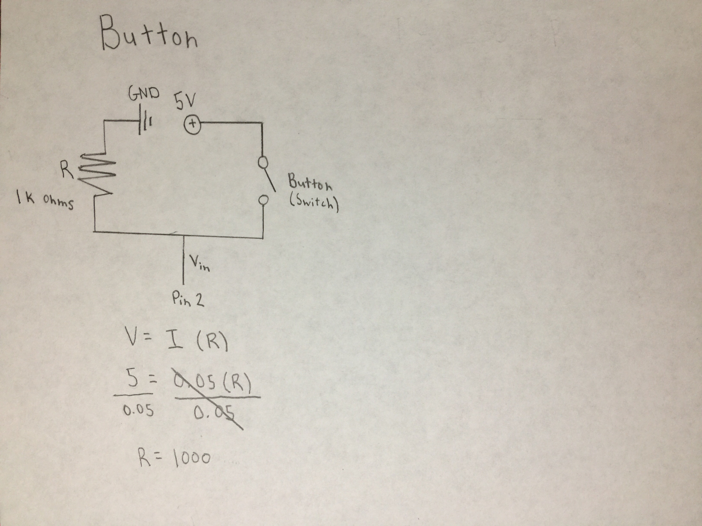
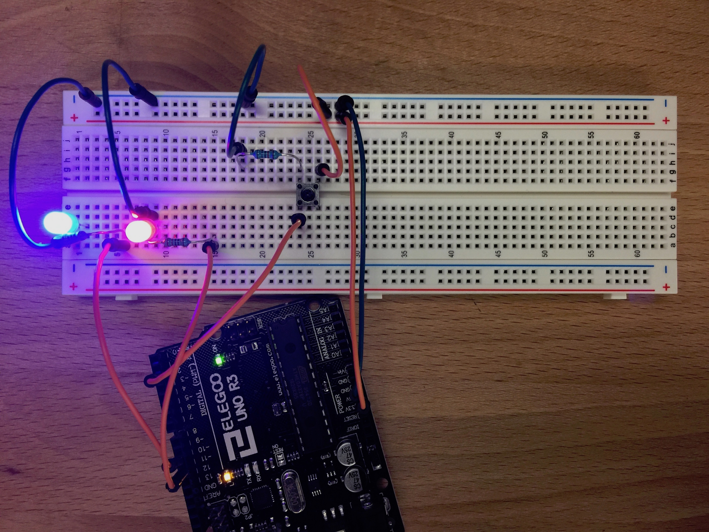

Steven Yong's Assignment 2!
Schematic
 I decided to sketch the schematics separately. I think for next time I will attempt to sketch it as one schematic and include the Arduino. Along with the sketches, I calculated the resistances. I remember that the professor stated the button needs 1,000 ohms, so my math checks out.
Circuit
Adding the extra layer of the button, I was confused for awhile this week. A lightbulb went off when I learned that the LEDs connect to the Arduino and not the button somehow.
Firmware
void setup() {
pinMode(13, OUTPUT); // initialize digital pin 13 as an output
pinMode(12, OUTPUT); // initialize digital pin 12 as an output
pinMode(11, OUTPUT); // initialize digital pin 11 as an output
}
// the loop function runs over and over again forever
void loop() {
digitalWrite(13, HIGH); // turn the red LED (pin 13) on by making the voltage HIGH
digitalWrite(12, HIGH); // turn the green LED (pin 12) on by making the voltage HIGH
digitalWrite(11, HIGH); // turn the blue LED (pin 11) on by making the voltage HIGH
delay(500); // wait for half a second
digitalWrite(13, LOW); // turn the red LED (pin 13) off by making the voltage LOW
digitalWrite(12, LOW); // turn the green LED (pin 12) off by making the voltage LOW
digitalWrite(11, LOW); // turn the blue LED (pin 11) off by making the voltage LOW
delay(500); // wait for half a second
}
The coding was hard as well. I had to scale back. My original intention was to have the button fade in one LED, while fading out the other simultaneously; pressing it again would reverse the process. Jasper explained some of the things I needed to do and I realized I was pressed on time. I guess just fading in LEDs is cool too.
Circuit's Operation

Hey, it works. Can't complain. The fading in doesn't look obvious, but it's there.